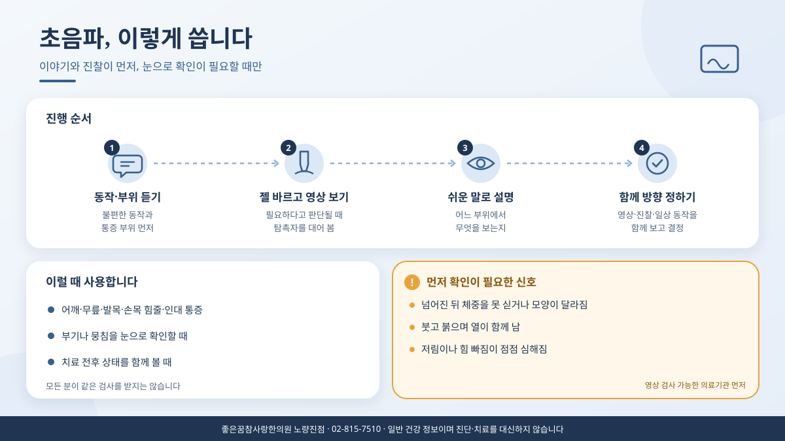

초음파는 모든 분께 하는 검사가 아니라 통증 부위의 힘줄·근육·관절 주변을 눈으로 확인할 필요가 있다고 판단될 때 씁니다. 화면을 함께 보며 쉬운 말로 설명하고, 영상만으로 원인을 단정하지 않습니다.
여쭙는 것
- 어느 동작에서 가장 불편하신가요?
- 언제부터 아팠고, 다친 일이 있었나요?
- 붓거나 뜨겁거나 멍든 곳이 있나요?
생활에서 해 볼 것
- 검사할 부위를 걷어 올리기 쉬운 편한 옷을 입고 오기
- 아픈 동작을 무리해서 반복하지 말고, 어떤 동작이 아픈지만 기억해 두기
- 붓고 열감이 있으면 찬 수건을 잠깐 대고 그 부위를 쉬게 하기
한의원에서 함께 살필 것
- 같은 동작에서 통증이 반복되는데 원인이 헷갈리는 경우
- 붓기와 뭉침이 있어 부위를 확인하고 싶은 경우
- 치료 뒤 달라진 점을 화면으로 함께 보고 싶은 경우
먼저 확인이 필요한 신호
- 넘어지거나 부딪힌 뒤 체중을 싣지 못하거나 모양이 달라진 경우
- 붓고 붉으며 열이 함께 나는 경우
- 저림이나 힘 빠짐이 점점 심해지는 경우

"여기가 아프다"는 말과 실제 몸 안의 상태는 다를 수 있습니다. 초음파는 방사선 없이 몸 안을 실시간 영상으로 볼 수 있는 방법이라, 통증 부위 주변을 확인할 때 쓸 수 있습니다. 좋은꿈참사랑한의원에서는 이야기와 진찰을 먼저 하고, 눈으로 확인할 필요가 있을 때만 초음파를 씁니다.
왜 이런 불편이 생길 수 있나요
같은 자리가 아파도 원인은 여러 갈래일 수 있어, 말과 손으로만 구분하기 어려울 때가 있습니다.
- 힘줄이 붓거나 두꺼워져 움직일 때마다 아픈 경우
- 근육이 뭉치거나 늘어나 특정 동작에서 아픈 경우
- 관절 주변의 물주머니(활액낭)나 물혹이 부어 눌리는 경우
- 오래 반복한 동작으로 힘줄이 붙는 자리에 부담이 쌓인 경우
이럴 때 초음파로 아픈 자리를 직접 보면, 어느 부위를 중심으로 살필지 정하는 데 참고가 됩니다.

먼저 이렇게 여쭙니다
- 어느 동작에서 가장 불편하신가요?
- 언제부터 아팠고, 다친 일이 있었나요?
- 붓거나 뜨겁거나 멍든 곳이 있나요?
- 이전에 받은 영상 검사(X선, MRI)나 주사 치료가 있나요?
이럴 때 사용합니다
- 어깨, 무릎, 발목, 손목처럼 힘줄·인대·근육이 관련된 통증이 있을 때
- 부기나 뭉침이 있어 부위의 상태를 눈으로 확인할 필요가 있을 때
- 치료 방법을 정하기 전에 어느 부위를 중심으로 볼지 확인하고 싶을 때
- 치료 전후의 상태를 환자분과 함께 보며 설명할 필요가 있을 때
모든 분이 같은 검사를 받지는 않습니다. 말씀해 주신 증상과 진찰을 바탕으로 필요하다고 판단될 때만 합니다.

이렇게 진행합니다
- 불편한 동작과 통증 부위를 먼저 듣습니다.
- 필요하다고 판단되면 그 부위에 젤을 바르고 탐촉자를 대어 영상을 봅니다.
- 화면을 보며 어느 부위에서 무엇을 보고 있는지 쉬운 말로 설명합니다.
- 영상과 진찰, 일상 동작의 불편함을 함께 보고 방향을 정합니다.
일상에서 먼저 해 볼 수 있는 것
- 검사할 부위를 걷어 올리기 쉬운 편한 옷을 입고 오기
- 아픈 동작을 무리해서 반복하지 말고, 어떤 동작이 아픈지만 기억해 두기
- 붓고 열감이 있으면 찬 수건을 잠깐 대고 그 부위를 쉬게 하기
- 이전 검사 결과지를 휴대폰 사진으로 챙겨 두기

한의원에서 함께 살필 수 있는 경우
- 같은 동작에서 통증이 반복되는데 원인이 헷갈리는 경우
- 붓기와 뭉침이 있어 부위를 확인하고 싶은 경우
- 치료 뒤 달라진 점을 화면으로 함께 보고 싶은 경우
좋은꿈참사랑한의원에서는 먼저 불편한 상황을 충분히 듣고, 필요하다고 판단될 때 초음파로 아픈 자리를 확인한 뒤 침·약침·추나·체외충격파 가운데 상태에 맞는 방법을 정합니다. 귀가 전에는 집에서 지켜볼 점과 다음 진료에서 다시 볼 부분을 알려 드립니다.
알아두실 점
- 초음파 영상만으로 통증의 모든 원인을 판단하지 않습니다. 영상, 진찰, 환자분의 이야기를 함께 봅니다.
- 영상에서 보이는 모습이 곧 통증의 원인이라고 단정하지 않습니다.
- 더 정밀한 검사나 다른 의료기관 진료가 필요하다고 판단되면 안내해 드립니다.
- 처음 본 영상과 달라진 점이 궁금하면 다음 진료에서 지난번 이야기와 함께 이어서 봅니다.

이렇게 기록해 오시면 상담이 쉬워집니다
- 아픈 동작과 아픈 시간대(아침, 일한 뒤, 밤)
- 통증이 시작된 날과 그 무렵의 일(운동, 이사, 넘어짐)
- 이전 X선·MRI 결과지나 판독지 사진
- 복용 중인 진통제와 다른 약
이런 증상은 먼저 확인이 필요합니다
- 넘어지거나 부딪힌 뒤 체중을 싣지 못하거나 모양이 달라진 경우
- 붓고 붉으며 열이 함께 나는 경우
- 저림이나 힘 빠짐이 점점 심해지는 경우
- 밤에 쉬어도 가라앉지 않는 통증이 이어지는 경우
이런 경우에는 영상 검사가 가능한 의료기관에서 먼저 확인받으시기를 권합니다. 복용 중인 약은 처방한 의사와 상의 없이 줄이거나 끊지 않습니다.
한눈에 보는 표
| 구분 | 핵심 |
|---|---|
| 여쭙는 것 | 어느 동작에서 가장 불편하신가요? 언제부터 아팠고, 다친 일이 있었나요? |
| 생활에서 해 볼 것 | 검사할 부위를 걷어 올리기 쉬운 편한 옷을 입고 오기 아픈 동작을 무리해서 반복하지 말고, 어떤 동작이 아픈지만 기억해 두기 |
| 한의원에서 함께 살필 것 | 같은 동작에서 통증이 반복되는데 원인이 헷갈리는 경우 붓기와 뭉침이 있어 부위를 확인하고 싶은 경우 |
| 먼저 확인이 필요한 신호 | 넘어지거나 부딪힌 뒤 체중을 싣지 못하거나 모양이 달라진 경우 붓고 붉으며 열이 함께 나는 경우 |
자주 묻는 질문
초음파는 모든 환자가 받나요?
아니요. 통증 부위의 상태를 눈으로 확인할 필요가 있다고 판단될 때만 사용합니다.
몸에 해롭지 않나요?
초음파는 방사선을 쓰지 않는 검사입니다. 다만 모든 검사는 필요한 경우에 하는 것이 원칙입니다.
초음파에서 이상이 보이지 않으면 아프지 않은 건가요?
아니요. 영상에서 뚜렷하게 보이지 않아도 통증은 있을 수 있어, 진찰과 환자분의 이야기를 함께 봅니다.
비용은 어떻게 되나요?
적용 대상과 비용은 진찰 후 안내해 드립니다.
이 글은 일반적인 건강 정보이며 개인의 진단이나 치료를 대신하지 않습니다. 증상이 있거나 복용 중인 약이 있다면 진료를 통해 확인하세요. 치료 효과는 개인마다 다를 수 있습니다.
좋은꿈참사랑한의원은 재진 때 지난번 이야기부터 이어서 여쭙니다. 진료시간과 예약은 오시는 길에서 확인하세요.